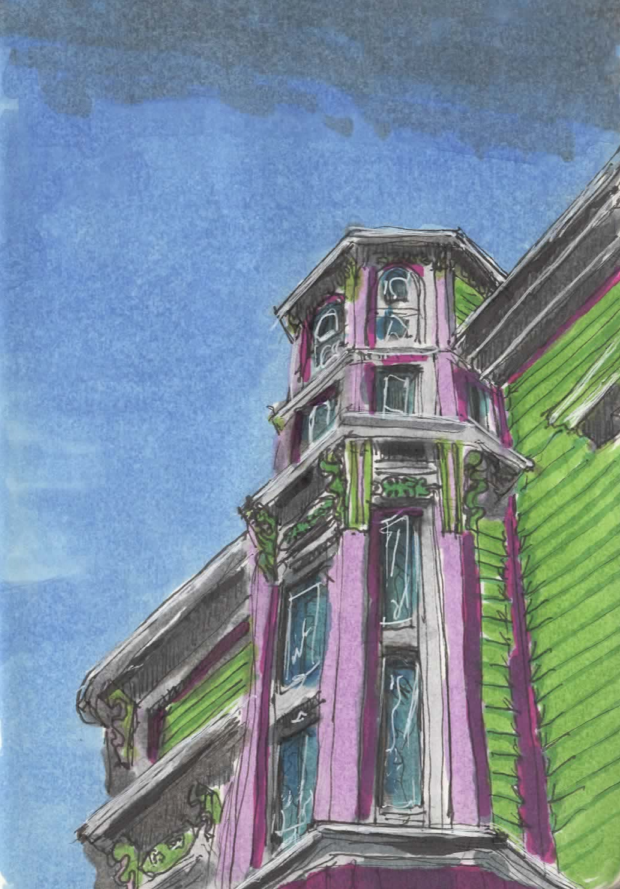

Lunenburg Events
Music, theatre, arts, and community — for the next two weeks.
Upcoming events in Lunenburg
Saturday, October 17
9:00 AM
— Making Sense of Chaos — Exhibition by Terry Havlis Drahos — at Lunenburg School of the Arts
7:00 PM
— Long Call, Roo Wonfor, S. Ayton — at Old Confidence Lodge
7:00 PM
— Fall Gala: Jonathan Biss, piano — at LAMP
Wednesday, October 21
7:00 PM
— Sonata Night — at LAMP
Thursday, October 22
8:00 AM
— Lunenburg Farmers Market — at Lunenburg Community Centre
Saturday, October 24
9:30 AM
— Museum Closing Day — at Fisheries Museum of the Atlantic
Sunday, October 25
2:30 PM
— Banff Mountain Film Festival World Tour — at Old Confidence Lodge
Tuesday, October 27
7:00 PM
— LHS Speaker Series: Steve Skafte — Tales from Abandoned Nova Scotia — at Fisheries Museum Boat Shop
7:00 PM
— LAMP @ Government House — at LAMP
Thursday, October 29
8:00 AM
— Lunenburg Farmers Market — at Lunenburg Community Centre
7:00 PM
— "Fellow Creatures" Exhibition by Michael Peters — at Lunenburg School of the Arts
Friday, October 30
12:00 PM
— Sound & Sketch at Lunenburg School of the Arts — at LAMP
6:00 PM
— Halloween Family Dance — at Old Confidence Lodge
Saturday, October 31
7:00 PM
— Halloween Bash — at Old Confidence Lodge
Loading events…